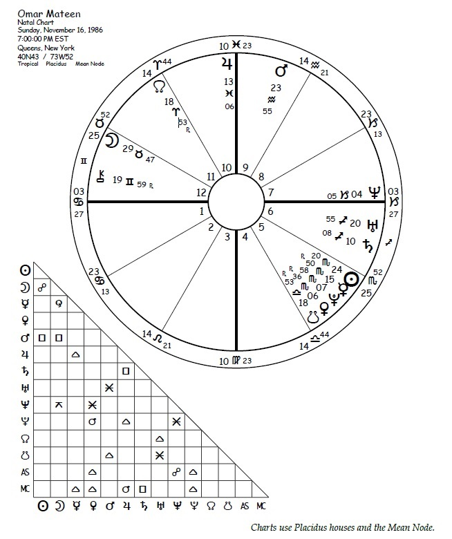
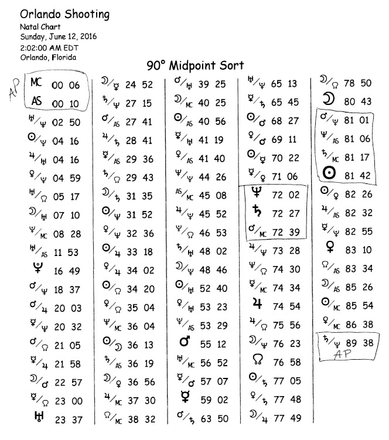
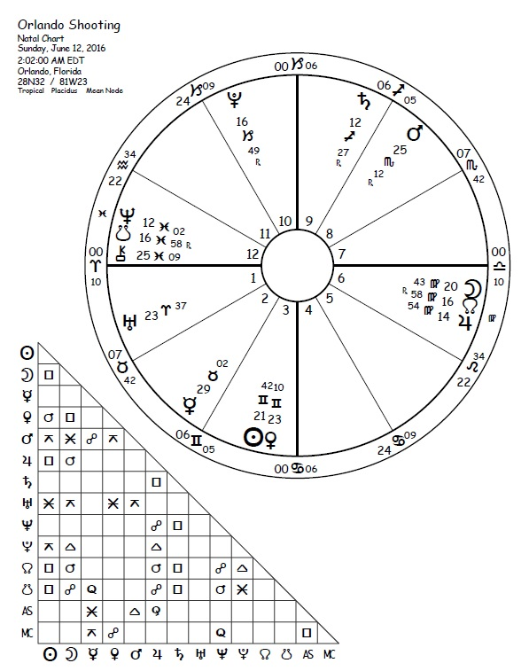
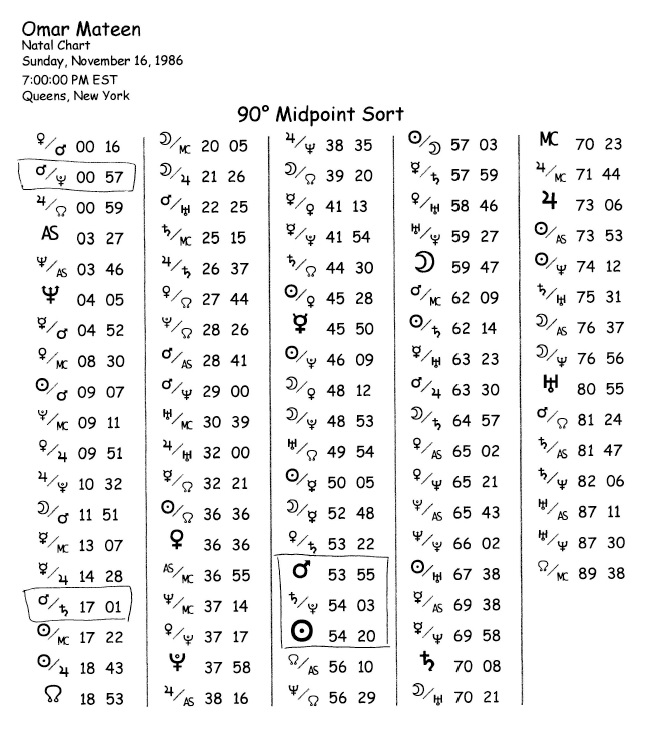

Midpoint Madness and the Orlando Massacre
Exploring Mars, Saturn, Pluto Combinations
Bonus Content Article for TMA Subscribers — Aug./Sept. 2016 Issue
View pdf version of the file
by Kathy Rose
The tragic mass shooting that recently stunned Orlando, Florida and the rest of the
United States — as well as impacting people in far parts of the world — is still producing shock
waves of sadness and grief for us all.
I am very mindful of the negative effect on our energy field when there is constant focus
on such a tragedy, disaster, or catastrophe. So, my intention with this article is not to continue to
amplify feelings of distress but rather to focus on a meaningful learning opportunity — looking
through the clarifying lens of astrology. In particular, I would like to point out a potent
midpoint pattern involving Mars, Saturn, and Pluto combinations.
First, let’s take a look at the natal chart of the man identified as the shooter inside the
Pulse nightclub, Omar Mateen. (See Chart 1, below.) Mateen has a stellium in Scorpio falling in
the 5th house, including the Sun, Mercury retrograde, and Venus retrograde tightly conjunct
Pluto. At first glance, we are instantly able to understand that the shooter was fueled by
emotional energy, and that much of this fixed water intensity is internalized (due to the two
personal planets being retrograde) — supercharged and empowered by the Pluto conjunction.
It has been my experience that, when Venus is retrograde in the natal chart, we must
consider an undercurrent of developmental tension, related to social expression and
relationship needs, as an influential part of the person’s life purpose. The degree to which this
may manifest as problematic depends on the complete view of the patterns present in the
horoscope — and of course, on the choices the person makes regarding how to express the natal
energies.
In Mateen’s chart — with Pluto conjunct retrograde Venus, which rules the 5th house
(giving and expressing love) — there is a suggestion of challenge and intensity related to the
social and emotional dynamic. So often, Pluto conjunct a personal planet adds “extremes” to the
mix, and here we could say that there is an overabundance of internalized, highly emotional
relationship energy.
Natal Mercury retrograde pulls energy inward even more; in Scorpio, the intellectual
process flows from deep feeling and emotion instead of from objective logic. The planet that
symbolizes how a person needs to think and communicate is internalized and repressed. And since
Mercury is in Scorpio, the thought process could easily move into secretive, clandestine, covert
patterns.

Quite often, when the two inner personal planets are retrograde, we see a second agenda
swirling under the surface, unknown to others. Symbolically, we could say that Mateen’s 5th
house is similar to an inner emotional volcano, aggressively — even obsessively — churning
beneath the surface with powerful, intensified, and eruptive emotion.
The tensions reflected in Mateen’s 5th house are reinforced by Mars in Aquarius, ruling
the 11th, in a tight square to the Sun. The energy of giving and receiving love (5th–11th axis) is
powerfully challenged. One more echo of deep hidden emotions is the natal Moon at 29°+ Taurus in the 12th house, opposing the Sun and squaring Mars. A dynamic t-square is formed
that demands our attention when we view this horoscope.
Continuing to look at the relationship and sexual energy in the shooter’s natal chart, we
must observe that Neptune is conjunct the Descendant. Neptune on an angle can suggest
unclear energy: “Something is other than it seems.” There is often confusion or bewilderment that
needs to be worked through as part of the life path, and in this case, it flows into relationships.
Another echo with this same theme is natal Saturn (ruling the 7th and 8th houses) square
Jupiter in Neptune-ruled Pisces.
We see a repeating pattern with the planets that rule the houses connected with
sexuality, intimacy, and relationships (5th, 7th, 8th) all involved with challenging aspects.
Again, this suggests that clarifying emotional needs regarding sexuality and relationships is
very much part of the life purpose.
There have been many news accounts of Mateen’s supposed friends and acquaintances
who came forward and said they felt that he may have been gay. We know that there was
conflict with his religious views — he has been described as a practicing Muslim — and the
issue of whether his alleged homosexuality would be rejected by that community. Mateen
reportedly embraced a radicalized, extreme view of Islam, which projects intense criticism and
condemnation of a lifestyle that is not heterosexual. The symbolism of Neptune on the 7thhouse
cusp is concomitant with the need to hide sexual desires that were not supported by the
important people in his life and the religious views to which he subscribed.
In Mateen’s chart, there is a clear and powerful statement that sexual and relationship
energy was severely challenged by high developmental tension as part of his life-purpose
theme, and we can assume that this played a part in the choice he made in the location of the
shooting.
Much more could be said about his horoscope, but now let’s look at the midpoints and
other factors in both his chart and that of the shooting event. There are powerful repeating
patterns involving Mars, Saturn, and Pluto that make a dynamic statement.
Aries Point Activation
The horrific mass murder at the Orlando nightclub that catered to LGBT patrons took
place when an important and influential midpoint picture was formed by the transiting planets
at the Aries Point (AP): AP = Saturn/Pluto. (See Diagram 1, below. I use the 90° midpoint sort,
which places all the cardinal signs at 0°–29°, the fixed signs at 30°–59°, and the mutable signs at
60°–89°.)

When we look at the chart for the event (Chart 2, following page), we can see that the
Aries Point (0° cardinal) was on the angles. I’ve written about the power of the AP before, and
how this zone in the zodiac carries a public projection dynamic. As I first glanced at the event
chart, my eye naturally could see that the midpoint of transiting Saturn and Pluto that day was
at the AP. Pause for a moment and let that soak into your consciousness. Combine the symbols
of Saturn and Pluto with the AP. What do you feel? It’s a heavy, somber, serious public
statement!
The Saturn/Pluto midpoint carries the most challenging energy of all the planetary
combinations, and on the day of the shooting, it was located at 29°38’ Sagittarius — just half a degree from being exactly on the 0° cardinal mark. We could interpret this as the potential for loss
and destruction on a wide public scale. This powerful midpoint is made even more active because
in the event chart it falls on an angle!
Most investigators are now characterizing the shooting as an act of terrorism. The fact
that the midpoint energy of Saturn/Pluto was active at the AP is no surprise.

Saturn and Neptune Connections
On the day of the event, Neptune and Saturn were exactly square. This is important
because Saturn in Sagittarius brings our awareness to religious issues and the potential for
righteous attachment to strict doctrine or dogma. Neptune in Pisces also calls our attention to
matters of faith
The current transiting Saturn–Neptune square had been activating Mateen’s natal
Saturn–Midheaven (MC) square. The shooter’s Saturn return was in full swing, pushing him to
make big life decisions — this is when we are urged to grow up and pick our path. The potent
cycle at 29 years of age offers a major course correction, and we make choices about our
commitment to achievement. We know that when Saturn comes back to its natal position, there
is a push to move into a new level of maturity.
Along with the pressure from the Saturn return, I believe that the major trigger for
Mateen’s mental/emotional/psychological break was the transit from Neptune to his MC. The
first hit was in March 2016; the final contact would have been in early 2017. Neptune contacting
an angle by transit can offer a spiritual or artistic breakthrough, but it can also intensify
confusion and increase bewilderment, depending on what’s going on in the person’s life. The
increase in emotional distress or disorientation stemming from the Neptune transit may have
felt like a heavy, dense mist, obscuring and reducing the ability to see clearly.
If Mateen had homosexual feelings and was programmed to believe that those urges
were evil or sinful — possibly so sinful as to deny him salvation — the Saturn return and
transiting Neptune activation, plus transiting Mars about to station square his natal Mars,
would ignite motivation to do something to release the fog and become clear. He did indeed
make a choice, and it was deadly.
Continuing to examine the midpoints in the event chart, we see more patterns that
reflect potential violence:
- Neptune = Mars/MC (confusion and idealism with assertive energy)
- Saturn = Mars/MC (strategic public aggression, focused protest, or violence)
- Sun = Mars/Pluto (ego is illuminated through extreme passion, aggression, and force)
- Sun = Neptune/ASC (ego identified with idealism or confusion, possible covert activity)
- Sun = Saturn/MC — all are exact by degree! (personal achievement through discipline and hard
work — the need to exert control)
Certainly, the midpoints in the event chart accurately reflect the tragic action, and we
clearly see the repeating pattern with Mars, Saturn, and Pluto.
Omar Mateen’s Natal Midpoints
Now we move to a deeper look at the shooter’s natal midpoint picture (Diagram 2,
below), and we see the unmistakable pattern of three heavyweight planets again! Here are the
relevant midpoints in Mateen’s natal chart:

- Mars = Saturn/Pluto (assertive energy used to release frustration, fighting back with extreme force)
- Sun = Saturn/Pluto (achievement through hard work and discipline).This is very important to
consider, because transiting Mars in Scorpio was retrograding back to a conjunction with the
natal Sun, further igniting and triggering the killer’s aggressive tendencies.
- AP = Mars/Pluto (extreme and forceful energy with public projection). What a sad thing — to
become famous (AP energy) for a horrible, historic act of extreme violence! This became his
legacy of infamy.
Mateen’s Midpoints Activated by Transits
Natal midpoint activation by transiting planets or by Solar Arc directions is important to
consider. When I analyze triggers to key midpoints, I keep the orb very tight. I look for an exact
hit by degree, and the closer to the minute, the better.
On the day of the shooting, we see that the transiting AP = Saturn/Pluto triggered
Mateen’s natal AP = Mars/Pluto. This presents an amazing correlation with the potential for
violence.
The pattern continues with transiting Pluto at 16°49’ Capricorn, igniting Mateen’s natal
Mars/Saturn midpoint, which is 17°01’ Capricorn (assertive energy and discipline come together
with forceful projection — extreme anger and frustration). This is again a very challenging and
difficult combination of energies.
The transiting Sun at 21°42’ Gemini on the day of the shooting was illuminating and
energizing Mateen’s Saturn/Ascendant midpoint, which is 21°24’ Pisces (personal achievement
through hard work and discipline). The Sun also triggered his Mars/North Node midpoint (public
aggression or protest).
In addition, there was an exact trigger from transiting Mercury to the natal
Uranus/Pluto midpoint — and also conjunct Mateen’s natal Moon (intense thought activity and
emotion that overturns the status quo – agitated thinking).
One more thing: Mateen’s MC and Saturn had moved by Solar Arc to exactly trigger his
natal Jupiter/Pluto midpoint (strategic amplification of personal power).
Again and again, we see the repeating pattern of Mars, Saturn, Pluto combinations
standing out.
Media outlets have said that Mateen yearned for a career in law enforcement. He had
applied to the police academy and had been rejected. Over a number of years, he had
reportedly taken and excelled at shooting courses. At the time of the murders, he was working
as a security guard at a gated residential community, which may have fulfilled some part of his
desire — or instead could have underscored a profound sense of underachievement.
Given the stellium in Scorpio and the midpoints illustrated earlier, this man was wired
to be interested in deep emotional intensity and, perhaps, life issues involving violence. With
appropriate love and support, he could have channeled this into being very skilled at detective
work, criminal investigation, general police work, or the military.
There is always a choice as to how we use the energies present in our horoscope. Mateen
had the vocational profile for undercover police work, solving mysteries, and even confronting
violence. Somewhere along the way, he got off track, and a very negative manifestation of his
natal chart was chosen.
It’s quite probable that his sexual feelings, which may have fueled his confusion, his selfdoubt,
even his rage — feelings in deep conflict with his religious views — helped push him to
make these unfortunate choices. An unresolvable emotional conundrum led to a downward
spiral that triggered the shadow and negative manifestations of all the aforementioned natal
energies.
Spectrum of Expression
When I teach astrology, I frequently mention the importance of considering the concept
of spectrum of expression regarding the natal chart. I believe that two people can be born on the
same day, at the same time and location, and yet express vastly different levels of the planetary
patterns in their natal chart. When we take physical form on the Earth plane, we bring with us
the strengths and vulnerabilities from other incarnations — based on how we’ve chosen to react
and process prior life experiences. It is my belief that we have choice every step of the way.
If the shooter had scheduled an astrology appointment prior to the horrific event, we
would certainly have made note of the obvious challenges and tensions in his horoscope in the
preparation for consultation. However, it is irresponsible to make an absolute judgment, prior
to talking to the client, as to whether these natal challenges might be expressed constructively or
destructively. We must communicate with our clients and listen for details that inform us how
they are living their chart.
Indeed, it is incredibly sad that Omar Mateen engaged his natal energies in such an
extreme, negative spectrum of expression. Our ethics as astrologers compel us to remember to
look at all levels of possible manifestation. I believe that we must consider the circumstances in
life development that are specific to the individual before making a declarative evaluation of
natal energies.
Just because a person has a stellium in Scorpio, with Venus retrograde conjunct Pluto,
doesn’t mean there will be powerful emotional or sexual conflict that intensifies and leads to tragedy or violence. The cookbook astrological approach of “this means that” tends to represent
only one tiny portion of possible expression.
In the case of this very troubled man and a terribly tragic event, we can work backward
and learn from the planetary patterns involving Mars, Saturn, and Pluto that were active that
day. We can absorb the meaningful challenges in Mateen’s natal chart so that we may be more
informed of the potential difficulties if we see similar patterns in our client’s horoscope. Our
goal is to be of service and to help others find a path to the most positive expression of the natal
chart.
We must use this knowledge and awareness with wisdom, integrity, and humility. That
is the path of the astrologer.
Chart Data and Sources
Omar Mateen, November 16, 1986; 7:00 p.m. EST; Queens, NY, USA (40°N43’, 73°W52’); AA: birth
certificate published in The New York Times, June 19, 2016.
Orlando Shooting, June 12, 2016; 2:02 a.m. EDT; Orlando, FL, USA (28°N32’, 81°W23’); news sources
report that the first 911 call came in at 2:02 a.m.
© 2016 Kathy Rose – all rights reserved
Kathy Rose is an astrologer with an international clientele. She is a Highest Honors Graduate of Noel Tyl’s
Master’s Degree Certification Course in Astrology and serves as Tyl’s Teaching Associate. Kathy is also the
producer and publisher of the 9-part Tyl MasterWork DVD series, and has developed an appreciative audience
with her popular YouTube channel (roseastrology), featuring more than 100 videos. To contact her, telephone:
(757) 340-5516; e-mail: roseastrology@yahoo.com; or visit her website: http://roseastrology.com
View pdf version of the file